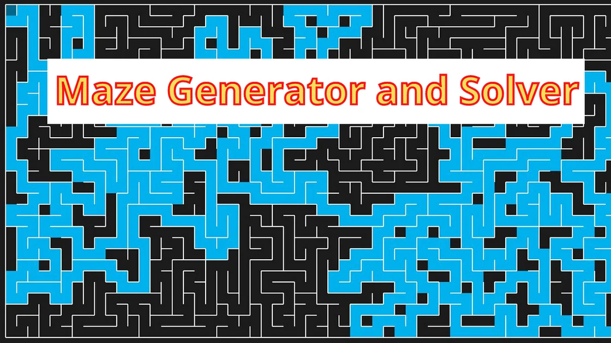
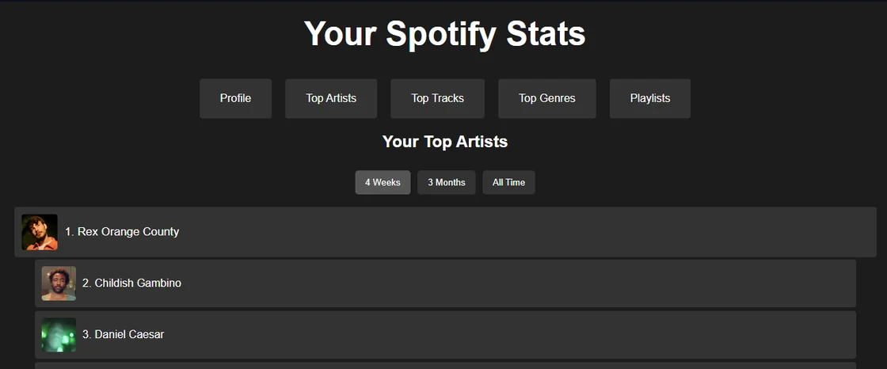

Work Experience
Data Analyst Intern
May 2026 - PresentGeotab · Oakville, ON · Hybrid
- Maintain and debug Apache Airflow DAGs in Google Cloud Composer for production SalesOps data pipelines.
- Write and deploy production BigQuery SQL for Revenue Operations tables, including device status, database dimensions, and accounts master datasets.
- Manage the full GitLab CI/CD workflow, guiding changes from branch development through staging validation to production deployment.
- Execute live table migrations against strict infrastructure deadlines while collaborating across cross-functional data owners.
Data Management Associate, Co-op
Jan 2025 - Aug 2025Ontario Ministry of Transportation · St. Catharines, ON · Hybrid
- Engineered enterprise Power BI dashboards integrating large-scale datasets from Azure Databricks and SQL, replacing manual reporting processes across multiple business units.
- Developed complex SQL queries and VBA automation scripts to modernize legacy workflows, reducing manual processing time from hours to minutes.
- Spearheaded the technical rollout of the internal Data Broker Tool, driving cross-team onboarding and establishing a standardized data vocabulary.
Digital Solutions, Co-op
Apr 2024 - Sep 2024CIMCO Refrigeration · Burlington, ON · Hybrid
- Built and shipped production Flask web applications delivering real-time analytics to NHL arena operations teams.
- Developed a specialized thermal imagery visualization tool used by arena technicians to monitor refrigeration systems during live game environments.
- Automated engineering data collection workflows, significantly reducing manual data entry across controller monitoring systems.
Digital Solutions
Apr 2023 - Sep 2023CIMCO Refrigeration · Burlington, ON · Hybrid
- Built and deployed Microsoft Power Platform tools adopted across multiple departments to automate high-frequency manual workflows.
- Implemented SharePoint-based document routing and approval automation, cutting cross-department turnaround times.
- Delivered technical solutions iteratively through close, cross-functional collaboration with engineering, operations, and IT stakeholders.
My Projects
NHL Arena Web Interface
Made with:
Built during my co-op at CIMCO Refrigeration
Led development of a Flask web application delivering real-time data and alarm information for NHL arenas, including a thermal imagery support system. Built a Python data aggregation pipeline integrating two APIs into structured, scalable JSON storage.
TechNest
Made with:
A full-stack PHP/MySQL e-commerce platform for buying electronics — product catalog, user accounts, an admin dashboard for managing products/users/themes, and three switchable UI themes across a fully responsive design.

MazeFinder - Genetic Algorithm
Made with:
A C++ application that solves 20x20 mazes using genetic algorithms, with a custom thread pool for parallel genome fitness evaluation and dynamic mutation/crossover strategies to refine optimal paths.

Spotify Stats Viewer
Made with:
A Flask web app using Spotify's Web API with secure OAuth authentication to display users' top artists, tracks, genres, and playlists.